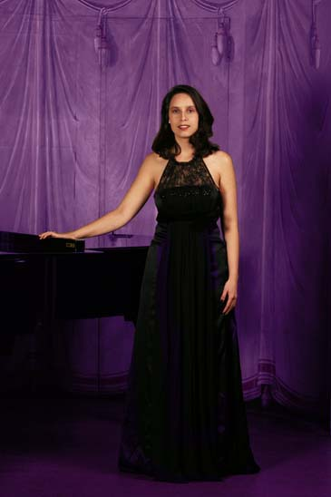

|
|  | Priscille Laplace wächst in einer musik- und literaturbegeisterten Familie als Tochter eines Schweizer Vaters und einer kolumbianischen Mutter in Genf auf. Der Gesang als vollendete Verbindung von Wort und Melodie, Musik und Literatur übt auf die ausgebildete Pianistin eine besondere Faszination aus. Seit ihrer Jugend erhält sie eine Gesangsausbildung zunächst bei Marga Liskutin am Conservatoire Populaire Genf, später bei Michèle Moser am Konservatorium Genf. Das gleichzeig an der Universität Genf absolvierte Studium der deutschen und spanischen Literatur schliesst sie im Februar 2003 mit dem Lizenziat ab. Währenddessen setzt Priscille Laplace ihre Ausbildung im Fach Lyrischer Gesang in der Klasse von Danielle Borst an der Musikhochschule Genf fort. Im Juni 2007 Abschluss mit dem Diplom als Solosängerin und der Auszeichnung durch den Preis des Vereins der Freunde und ehemaligen Studenten des Konservatoriums. Priscille Laplace nimmt im Rahmen ihrer Studien an den Meisterklassen von William Christie, Teresa Berganza, Edda Moser und Nathalie Stutzmann teil. Sie studiert Liedgestaltung mit Irvin Gage und Ruben Lifschitz und arbeitet mit Regisseuren wie Omar Porras und Jean Liermier zusammen. Beginn der Konzerttätigkeit im März 2004 in der Victoria Hall Genf in Händels «Israel in Egypt» unter der Leitung von John Duxbury an der Seite von Solisten wie Philippe Jaroussky. Dank eines Leenaard-Stipendiums widmet sich Sängerin seit Dezember 2006 ausschliesslich der Musik. Das Jahr 2007 ist von der Zusammenarbeit mit dem Quatuor Sine Nomine im Rahmen des gleichnamigen Festivals in Lausanne geprägt sowie mit Monica Huggett im Teatro Olimpico in Vicenza.
|
|
Während sie ihre Gesangsausbildung bei Danielle Borst, Philippe Huttenlocher und Iroko Kawamichi perfektioniert, singt Priscille Laplace ihre ersten Rollen an der Opéra Royal de Wallonie in Lüttich: Elisetta in «Il Matrimonio Segreto» von Cimarosa (Januar 2008), Adele in «Die Fledermaus» von Johann Strauss (Dezember 2008) und Najade in «Ariadne auf Naxos» von Richard Strauss (Januar 2009), wo sie auch die Zweitbesetzung der Zerbinetta ist. Die Zusammenarbeit mit renommierten Dirigenten prägt ihr künstlerisches Schaffen: Michel Corboz, Michel Tabachnik, Giovanni Antonini, Dmitri Jurowski, Patrick Davin, Philippe Huttenlocher, John Duxbury, Luc Baghdassarian, Stephan MacLeod, Leonardo García Alarcón, Véronique Carrot, Julian Villarraga , Anna Jelmorini, Jan Schultsz, Hervé Niquet und Monica Huggett. Im November 2008 gibt Priscille Laplace ein Konzert mit dem Pianisten Pascal Rogé und nimmt die «Liebeslieder» von Brahms an der Seite von Gilles Cachemailles, Marie-Claude Chappuis und Frédéric Gindraux auf. Im Juni 2009 ist sie bei der Produktion der «Sirènes» von Luca Francesconi zu hören, das als Auftragswerk des Centre Pompidou unter der Leitung von Michel Tabachnik in der Cité de la Musique in Paris zur Aufführung gelangt. Die Saison 2009 klingt im Dezember mit der Mitwirkung in der Operette «Das Land des Lächelns» von Franz Lehár an der Opéra Royale de Wallonie aus. Unter der Leitung von Marko Letonja singt sie in einer Inszenierung von Stefano Mazzonis Di Pralafera die Rolle der Mi. Im Jahr 2010 wird sie erneut nach Lüttich gerufen, um in Donizettis Oper «Rita» unter der Leitung von Claudio Scimone die Titelrolle zu singen. In 2010 wird Priscille Laplace im Rahmen ihrer Zusammenarbeit mit dem Pianisten Fabrizio Chiovetta in Genf zu hören sein. |